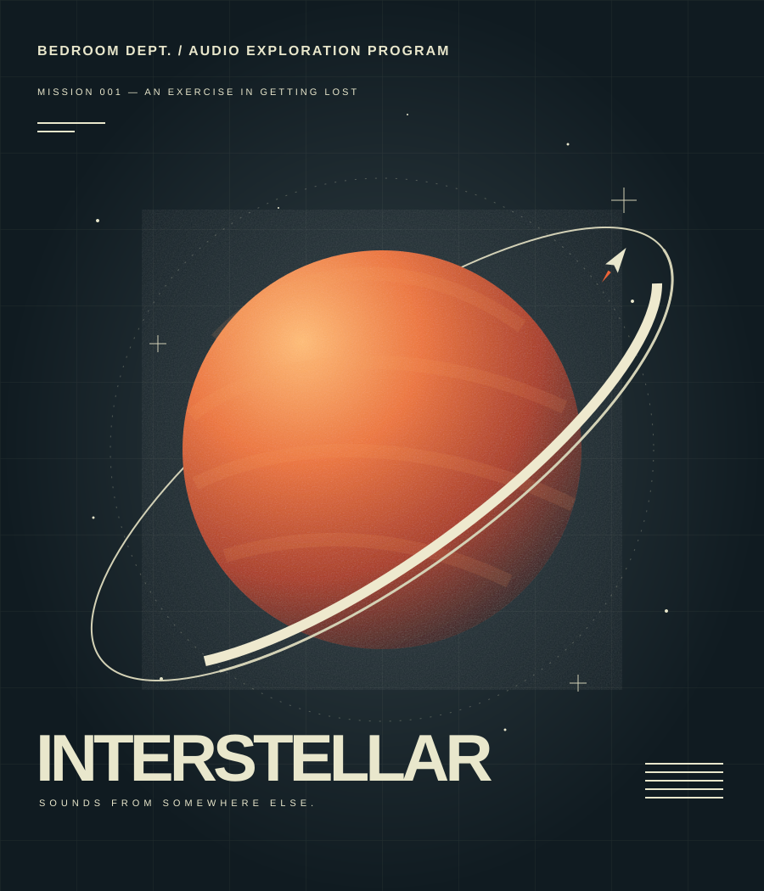

WORLDS.INTERSTELLAR ↗
Instruments
IN DEVELOPMENTNew starting points for melodies that go somewhere.
Instruments for the ideas that keep you up.
Built with imagination. Made for your world.

A NEW WORLD TO GET LOST IN
For the sounds
between the stars.
Dreamy keys. Evolving pads. Atmospheric textures. Our first virtual instrument explores the space between a half-remembered melody and somewhere you’ve never been.
Currently in development. Release date, pricing and compatibility will be announced.
Follow the transmission ↗THE DEPARTMENT / WHAT’S TAKING SHAPE
Every release gets its own universe.
Different moods. One independent spirit.
Future categories & creative explorations below.
New starting points for melodies that go somewhere.
Color, character and beautifully strange detours.
Small sparks for the next thing you can’t stop making.
An early look at the direction. These are not released products or confirmed release dates.
ABOUT BEDROOM DEPT.
Just a little space to make a lot of noise.
BEDROOM DEPT. is an independent audio software company built around a simple belief: the place you make music doesn’t limit where it can go.
We’re starting with INTERSTELLAR. The vision is a collection of instruments, effects, drums and samples with distinct personalities—each one its own world, all made for yours.
Bedroom made. Worldwide heard.
KEEP A FREQUENCY OPEN
Follow the making of INTERSTELLAR, future releases
and whatever comes out of the bedroom next.
Follow on Instagram for updates.
For questions or collaborations, send us a DM.
No email list yet. Following does not sign you up for one.